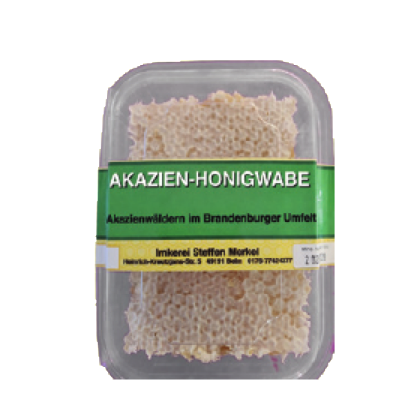
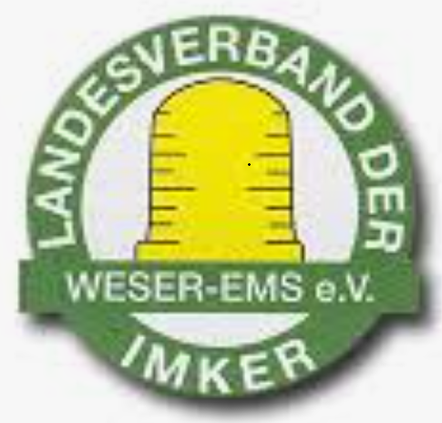
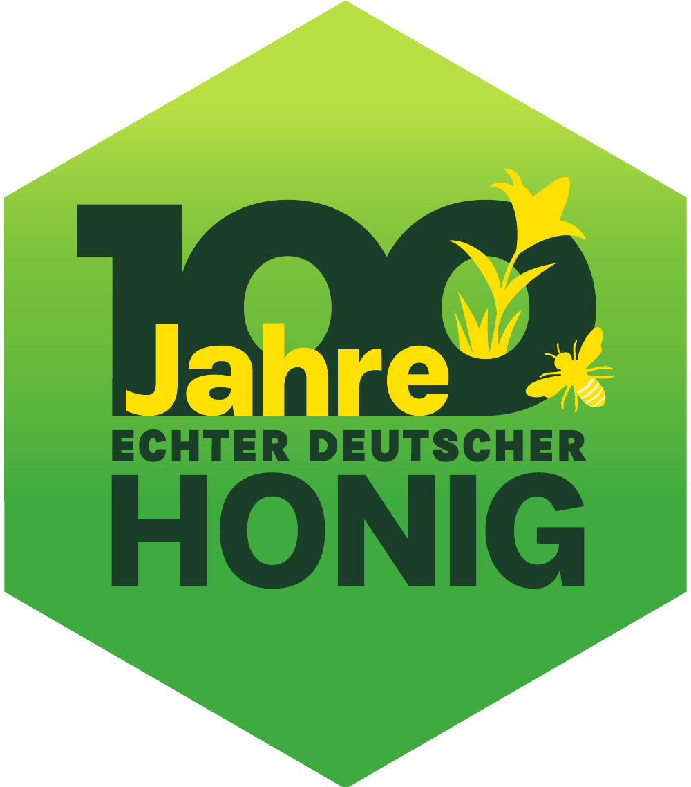
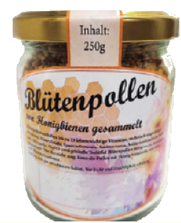

Akazienwabe300 g
10,00 €Imkerei Merkel · Osnabrück
Acht Sorten, von Osnabrück bis in die Pfalz. Entdecken Sie die Ernteorte und den Geschmack unserer Honige.

Die Imkerei
Steffen Merkel ist Mitglied im Landesverband der Imker Weser-Ems e.V. Das steht für seine Einbindung in die organisierte Imkerei der Region. Der Honig wird im Glas mit dem Warenzeichen „Echter Deutscher Honig“ des Deutschen Imkerbundes angeboten.
In der Neuen Osnabrücker ZeitungHonig und Waben jetzt in Belm aus dem AutomatenArtikel bei noz.de ansehen ↗
Mitglied im Landesverband der Imker Weser-Ems e.V.
Honig mit dem Warenzeichen „Echter Deutscher Honig“
Deutscher Imkerbund
Das Jubiläumsmotiv zum Warenzeichen „Echter Deutscher Honig“ – auf einem Glas Blütenhonig aus dem Sortiment.

Acht Honigsorten
Wählen Sie eine Sorte aus. Geschmack und Ernteort stehen direkt dabei.




Sortiment, Preise und Geschmack können von Ernte zu Ernte variieren. Bitte am Automaten prüfen.
Direkt vor Ort
Honig und Bienenprodukte gibt es an zwei Standorten. Der Automat in Belm wurde auch in der Neuen Osnabrücker Zeitung vorgestellt.
Zum NOZ-Artikel über den Automaten in Belm ↗Kontakt
Fragen zu Honig und Produkten? Rufen Sie Steffen Merkel an.
0176 / 77 42 43 77 ↗